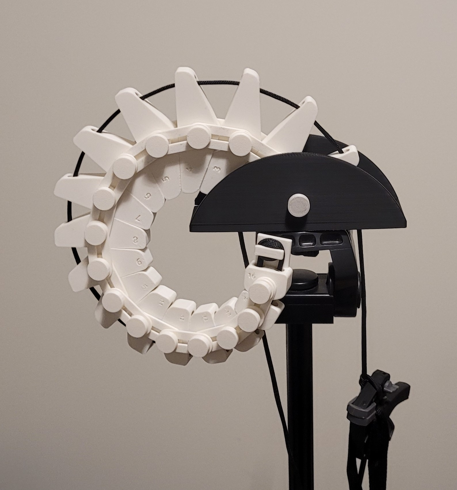
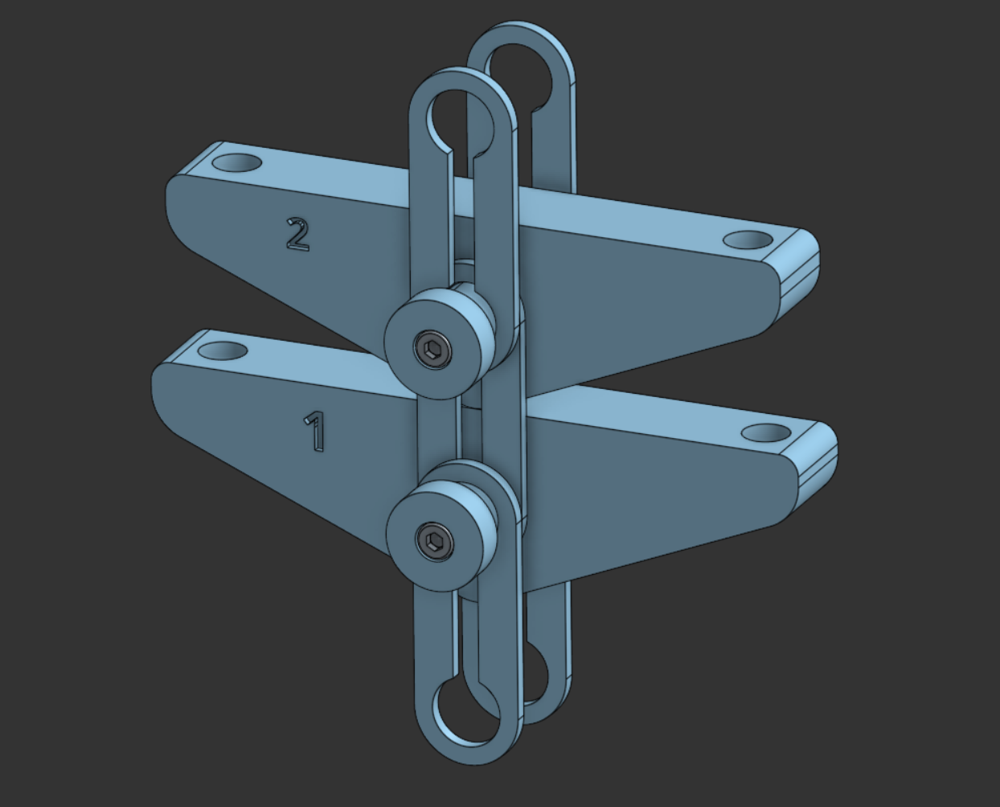
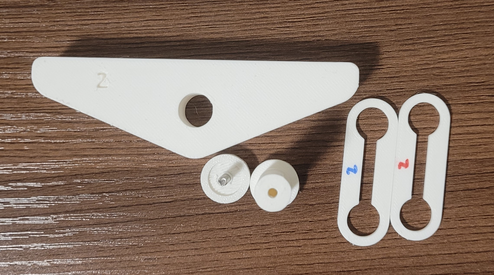
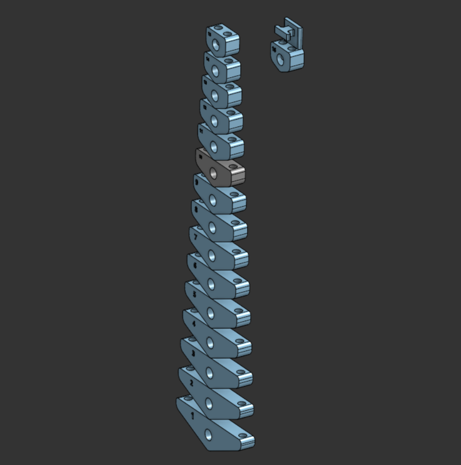
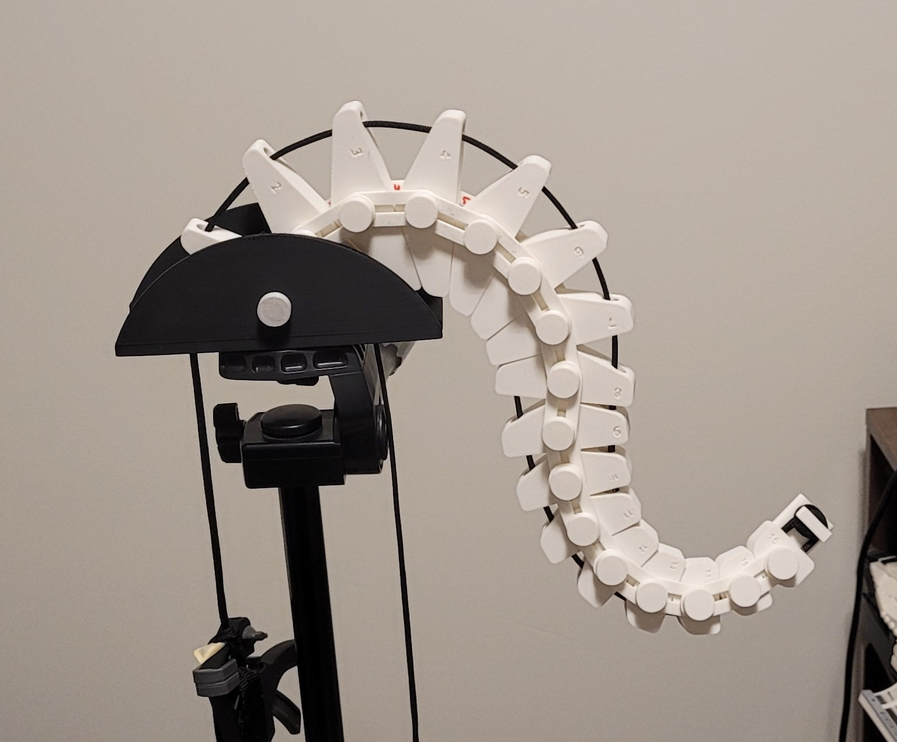
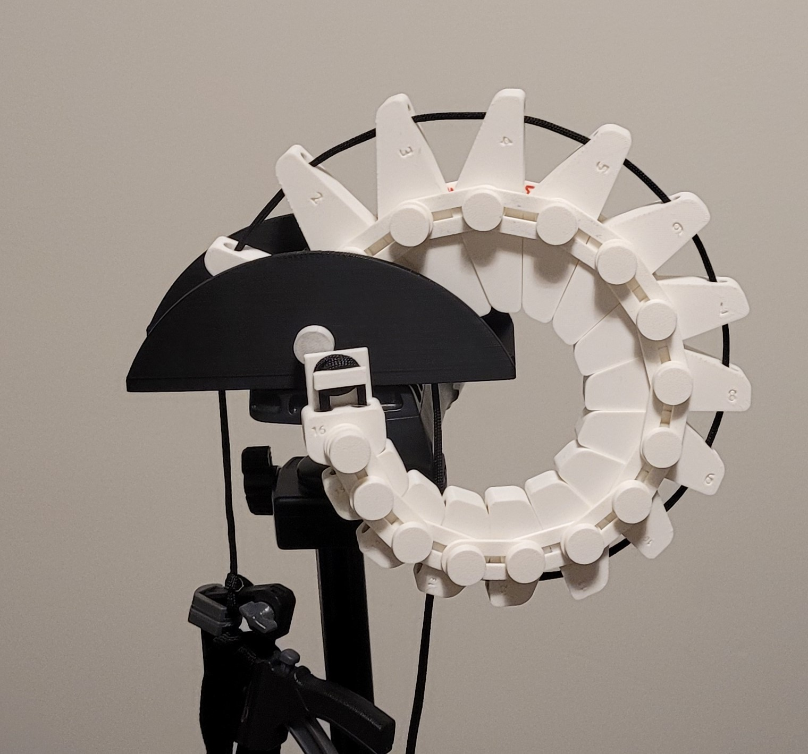
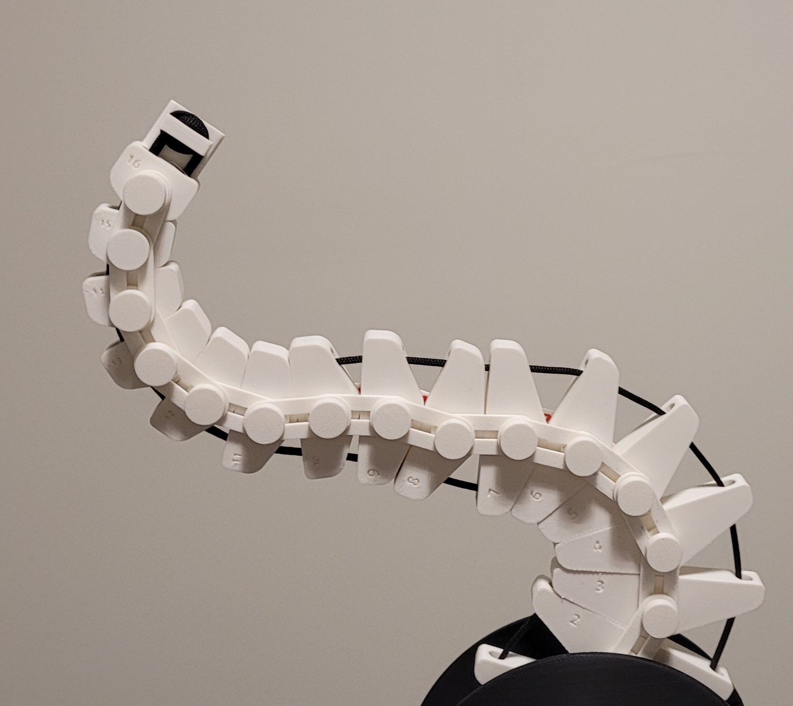
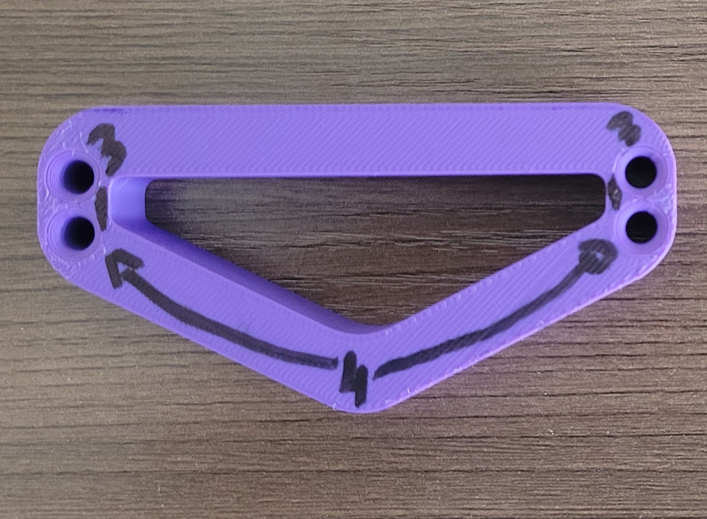
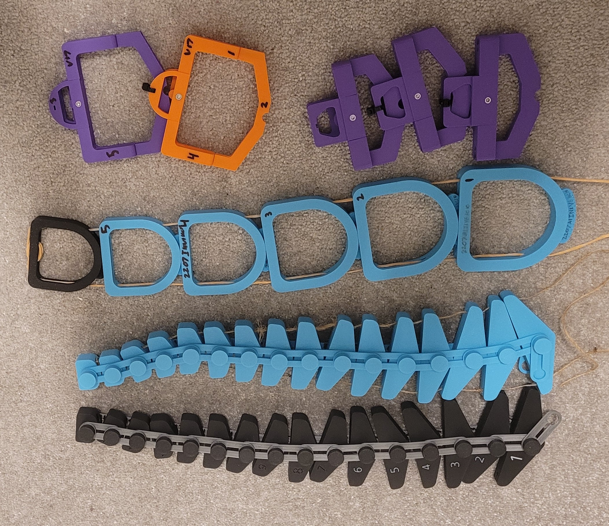
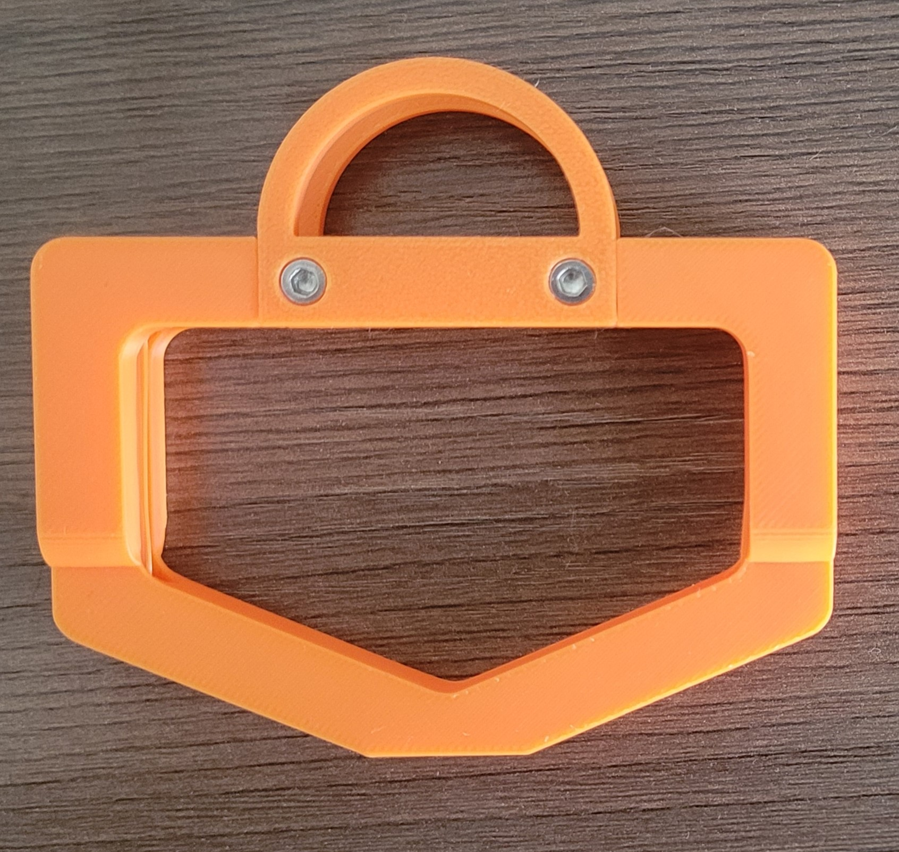

2D Octopus Arm End Effector

Problem Statement
Developed a bio-inspired 2D robotic arm that replicated compliant octopus-like motion within a planar workspace while addressing common soft robotics challenges such as high component count, difficult manufacturability, and material limitations. The project focused on simplifying the mechanical architecture and improving fabrication efficiency without sacrificing flexibility or functional motion. Project is based on this research paper ‘https://www.cell.com/device/pdfExtended/S2666-9986(24)00603-3.’
Contribution









What?
Developed a 2D octopus-inspired robotic arm that mimicked compliant biological motion using a simplified planar mechanism. The design emphasized lightweight construction, reduced part count, and manufacturability while maintaining flexible articulated motion within a 2D workspace by developing components suitable for manufacturing, assembly, and maintenance instead of using the previous print-in-place design.
How?
Redesigned the arm architecture to reduce mechanical complexity and improve manufacturability by simplifying the linkage structure and transitioning portions of the design from TPU to PLA, reducing print time, assembly effort, and material cost while maintaining functional flexibility.